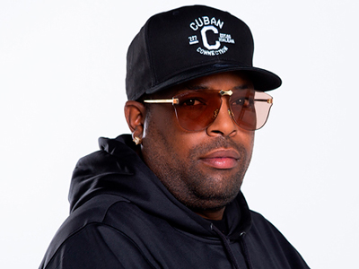
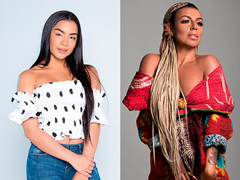
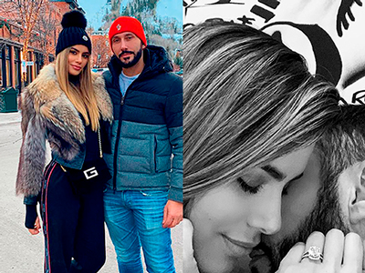
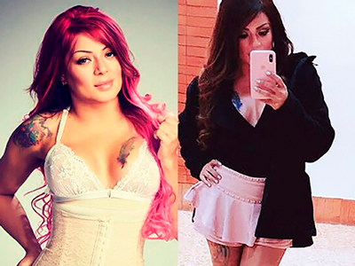
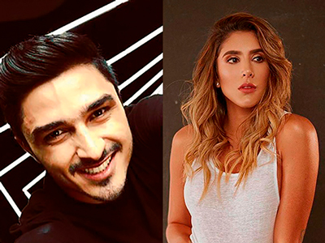
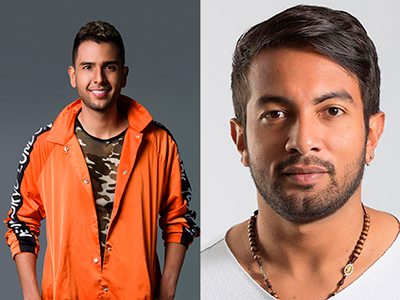

Actualidad


EL MICHA
El artista urbano más influyente de Cuba, anuncia lanzamiento mundial de su álbum debut titulado Mokongo. El lanzamiento del EP es acompañado por el estreno del vídeo de su primer sencillo, -Mala, Mala- con la participación de la estrella mundial Wisin. Este álbum incluye ocho temas inéditos y cuenta con colaboraciones de los más grandes artistas internacionales, entre ellos: Cosculluela, Farruko, Jowell y Randy, McCeja, Gue Pequeño el artista urbano más importante de Italia, y el Pavarotti de la Salsa, Tito Nieves.
¡DESDE LA HABANA CUBA!
Nesty llega a Colombia dispuesto a dar a conocer su música como solista, apostándole al género urbano donde desarrolla una propuesta fresca, juvenil y con diferentes fusiones de otros géneros sin dejar de lado los ritmos tropicales que acompañaron sus inicios. Logró diferentes reconocimientos con temas como -Pal mundo entero- y -Te he prometido-, haciéndolo merecedor a varios premios y nominaciones como los Grammy Latinos, Billboard, Premios Lo Nuestro y Premios Texas, en el año 2016.

¡LA MEJOR MADRINA!
Tomado de @maiamusical
Salomé Camargo encontró la mejor madrina y es la artista barranquillera Maía, pues cuando la joven artista empezó a grabar -Karma- su más reciente sencillo, Maía quien comparte la misma disquera TN MUSIC, la conoció y se enamoró de su talento, la entrenó en algunos aspectos y le dijo que desde ese momento contaba con su apoyo tanto musical como personal. Hoy en día son muy amigas se escriben y se invitan a sus shows a menudo.

¡DIJO QUE SÍ!
Foto: Tomado de @gutierrezary
La ex señorita Colombia Ariadna Gutiérrez se casa con el Dj francés Cedric Gervais, después de compartir imágenes de su relación mostrando la buena química que hay entre los dos, sorprendió a sus seguidores con una foto en blanco y negro donde muestra su anillo de compromiso.
La publicación en Instagram ya cuenta con más de 200 mil Me gusta y 3 mil comentarios de felicitación. Aunque no se ha fijado fecha, ni si será en Colombia o en Francia, estamos seguros que pronto tendremos detalles de esta boda. ¡Felicitaciones a los novios!

¡CUERPO DE INFARTO!
Foto: Tomado de @marbelle30
El secreto tras la pérdida repentina de peso de la cantante y presentadora Marbelle fue revelado por ella en sus redes sociales, pues se cansó de escuchar rumores de cómo logró su pérdida de peso tomando medicinas y suplementos. La cantante de música carrilera le contó a sus seguidores que se realizó una cirugía llamada Bypass Gástrico, reduciendo el tamaño del estómago para conectarlo con el intestino delgado, este procedimiento logra que el paciente no pueda albergar la misma cantidad de alimentos, esta operación se le realiza únicamente a las personas que son aptas.
¡NIÑA PRODIGIO!
Con honores la joven actriz de 14 años María Elvira recordada por su personaje protagónico en la serie de televisión
Azúcar. Se encuentra estudiando la carrera profesional de artes escénicas en La Escuela Charlot y es la única niña, pues todos sus compañeros son mayores de edad, sin embargo esto no es impedimento para ser la mejor de su clase. Esta pequeña además es modelo, bailarina y cantante, sin duda un talento integral. Próximamente la veremos como una de las protagonistas de la película de Harold Trompetero “Mamá al volante”.

UNA NUEVA OPORTUNIDAD
Foto: Tomado de @daniela_ospina5 y @harol36
Después de dos años de divorciada, la hermosa modelo y empresaria Daniela Ospina decidió darse una nueva oportunidad en el amor, a pesar de querer ocultar su relación durante algún tiempo ya no se cohíbe en hablar de Harold Jiménez (director de videos) con el que ha subido fotos en sus redes sociales, Daniela asegura que llevan saliendo hace un tiempo, están disfrutando y conociéndose.

COMPOSITOR DE CORAZÓN
José Acosta actor samario protagonista de la película Pájaros de Verano se encuentra grabando la producción sobre la vida de Martin Elías, y su personaje es el de Juank Vega, amigo y último mánager de Martín. Este joven actor tiene otra afición aparte de la televisión y es escribir, tiene más de 50 canciones del género vallenato y pop. Algunos de esos vallenatos se los mostró al cantante y actor Cantillo quien le dijo que después de terminar grabaciones en abril se dedicarán a escuchar las canciones que a lo mejor le servirán para el nuevo disco del artista.
¿DIEGO CAMARGO Y JAMARUK?
Foto: Tomado de @jamarukmusik
El actor bogotano fue convocado por la agrupación Jamaruk para ser el protagonista de su nuevo video -Mi cura- que ya podemos ver y escuchar en las todas las plataformas musicales. El video es una historia muy emotiva donde Camargo tocará muchas fibras. El actor está muy feliz, pues afirma que de sus agrupaciones favoritas se encuentra Jamaruk, pues le encanta el reggae y el sonido afro-caribe. El rodaje del vídeo fue en la ciudad de Bogotá en un reconocido bar y en una clínica.